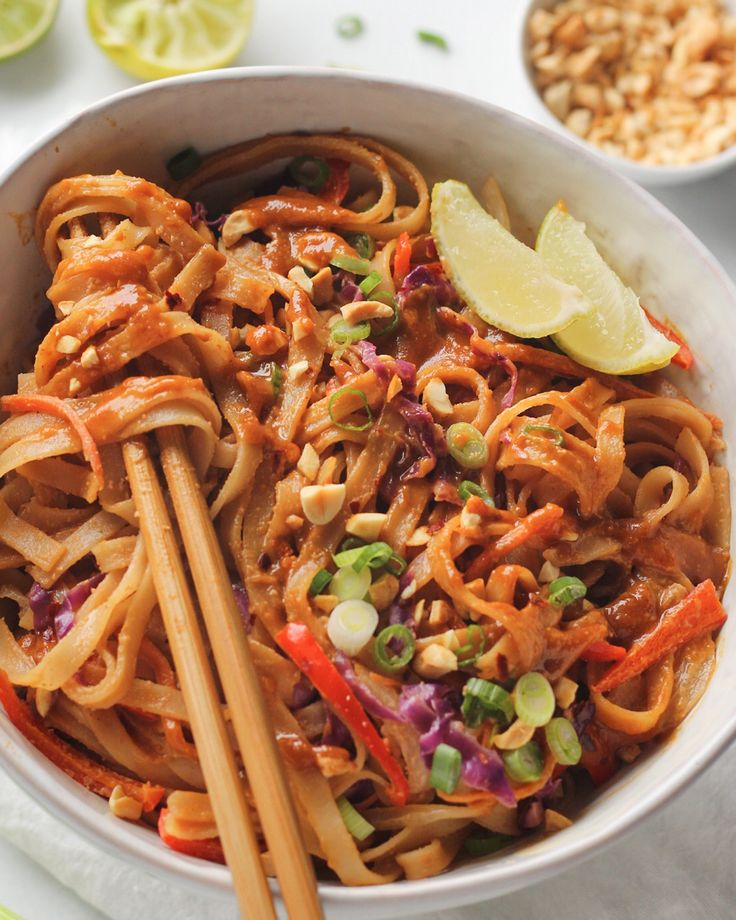

Pad thai
Origem: Tailândia
No mundo todo, o Pad Thai é o primeiro prato que vem à mente quando o assunto é gastronomia Thai. Para muitos, é o prato que marca o primeiro contato com essa cozinha e é sem dúvida um ícone nacional. A complexidade de texturas e sabores que misturam doce, azedo, salgado e picante contribuiram para que se tornasse o prato Tailandês mais consumido fora da Tailândia.
Ingredientes
Coloque o macarrão de arroz seco na água (temperatura ambiente) pelo tempo pedido pelo fabricante (em geral, cerca de 30 minutos), até que ele fique mole. Ferva levemente o açúcar de palmeira, o açúcar comum, a água de tamarindo e o molho de peixe por dois minutos até dissolver (deve ficar com sabor doce, levemente salgado e com o toque ácido do tamarindo). Corte o nirá ou a cebolinha chinesa em pequenos palitos e reserve. Aqueça o óleo vegetal numa wok e frite a cebola roxa até que pegue um pouco de cor. Quebre o ovo na wok, abaixe o fogo e mexa para cozinhar. Quando o ovo estiver quase pronto, empurre-o para um lado da wok e comece a cozinhar o camarão. Antes de o camarão ficar pronto, misture o tofu, o camarão seco, o nabo e o macarrão hidratado. Aumente o fogo e frite tudo, mexendo bastante por cerca de um minuto até que o macarrão pegue um pouco de cor. Junte o molho preparado e uma pitada de chilli em pó. Deixe ferver por um minuto e mexa bem. Coloque o broto de feijão e o nirá e cozinhe por cerca de 30 segundos, até amolecer um pouco. Ajuste o tempero (sabor deve ser, nesta ordem, doce, amargo e salgado). Coloque um pouco mais de broto de feijão e nirá fresco por cima. Sirva acompanhado de limão, amendoim e chilli em pó.